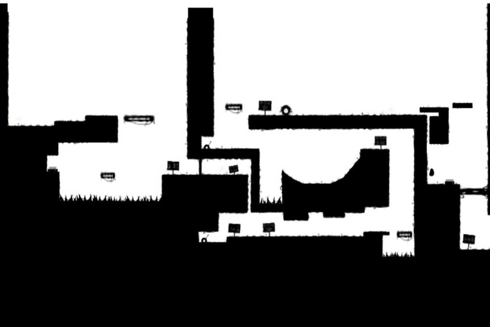
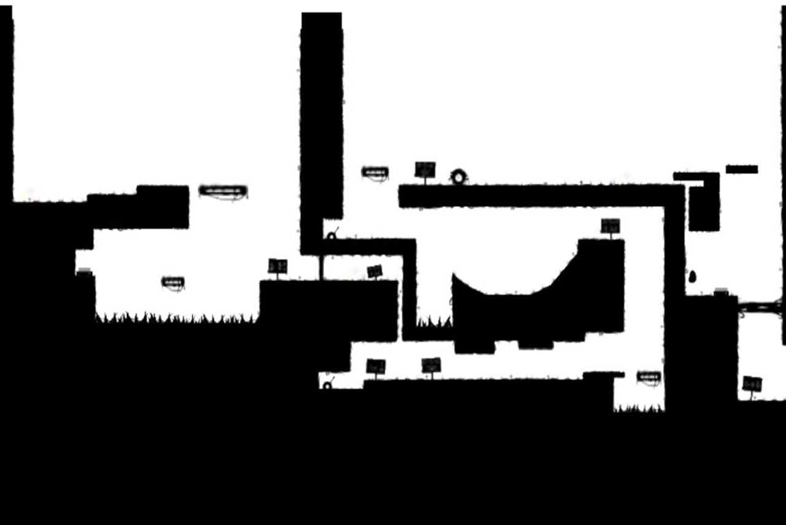
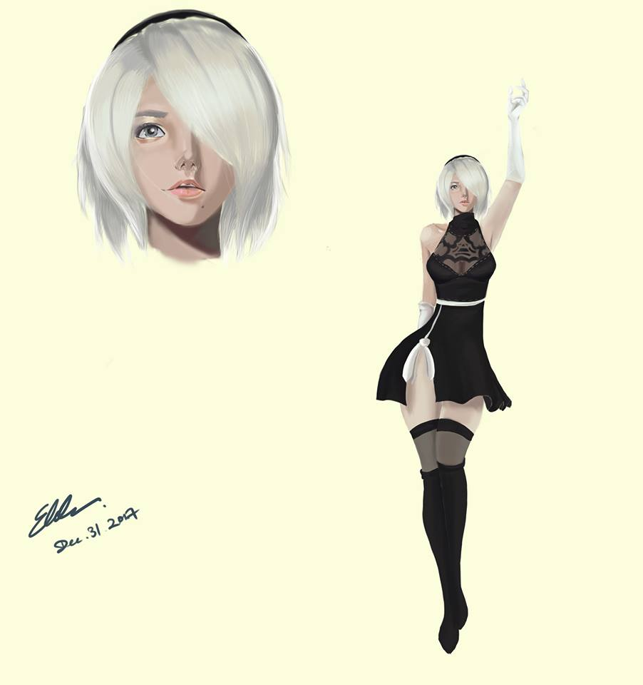
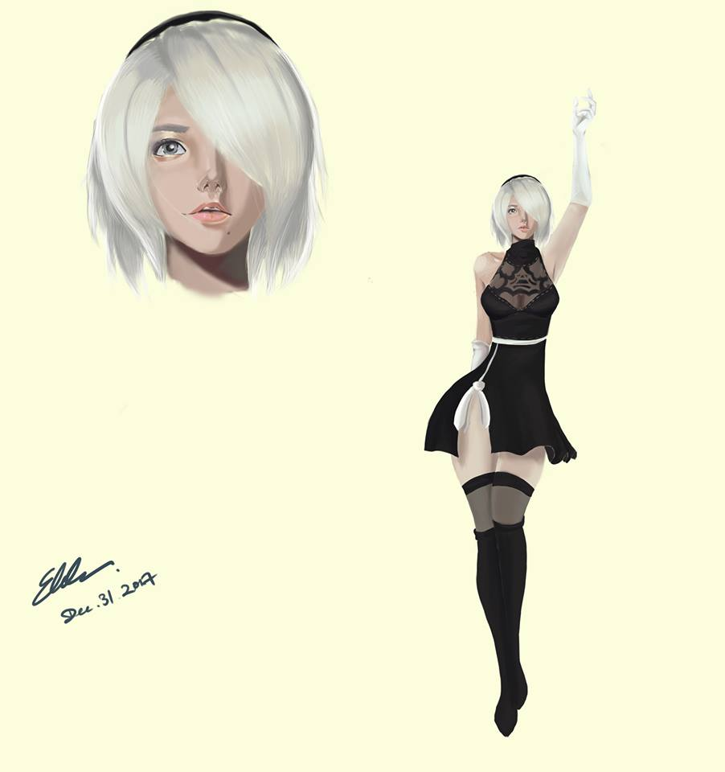

h1, h2, h3
<h1> Game Direction, Design, Model, Animation </h1><h2> Game Direction, Design, Model, Animation </h2><h3> Game Direction, Design, Model, Animation </h3>p
<p> Text </p>
I am a passionate Interactive Art & Technology undergraduate who possesses vast programming knowledge and an ever-expanding inventory of design ideas through daily inspiration that provides me technical insight on the design thought process. My practical leadership and communication skills are evident through my establishment of a game studio that specializes in indie game development with 11 other members. I am capable of creating positive and significant impact in the industry through my technical competencies and my strong interpersonal skills.
Adventure of Blobby is an indie game that was developed on Unity Engine initially for PC platform but later transferred onto iOS. The player would be playing as blobby and utilize its abilities to navigate through different levels and puzzles.
Our team started off by ideating the genre of the game we wanted to tackle. After considering our constraints on both technical side and also art assets, we came to the conclusion that we wanted to create a 2D platformer game that is heavily mechanics focused.
After understanding what our team decided to do, as the overall game director, I started ideation by simply drawing out the mechanics that I wanted to implement for this game, which later happened to be shapeshifting.
Our team had multiple meetings for both art assets and coding over the months. We had 3 milestone which includes multiple playtesting session. With that feedback, we were able to improve our game by adding/removing parts of the game and also fixed many bugs.
As the project manager was to make sure that everyone in the team was on the right track, provide feedback, set up meeting/deadlines and communicate with playtesters. My second task was to do part of the level design for my team. Also, since my team was lacking on art assets, I was able to learn some basic digital drawing and provide most of the art asset for the team; this includes all the foreground assets and also the UIs. Lastly, although I am not the main programmer, I was able to provide assistant on coding by doing part of the mechanics.
 

Athena’s Memory is a 3D combat-oriented action adventure game, which the player follows Athena’s footstep to recover her fragmented memory. Throughout the journey, the player will get to understand what happened in the materialized world while also reveals her dark history.
Although we only had 4 months to complete this game, our team wanted to challenge ourselves to create an action adventure game that focuses on both combat and narrative. My role within the group is the game director, character modeler/animator, and project manager.
As the game manager/director, I had daily individual/group meeting with each of my members. With that, I was able to stay up to date on the process and made sure everyone was on the right track. I also tasked everyone with the assignment that they have to finish by the end of the week. Lastly, I did most the documents that were needed for the project which includes weekly blogs, playtest documents, and game direction document.
As the character modeler/animator, since we wanted to create everything from scratch, I started off by sketching and researching what I wanted our character to look like. Although I have never tackled 3D character modeling, I was able to accomplish what we needed for the model. Since we are lacking on people, I put my focus on enemy modeling as well to make sure that the game has a wide variety of enemies. After that, I focused on researching the animations that we needed and videotaped myself acting them out. After countless hours, I was able to finish all the animations that were needed for both main character and enemies.
As a team, we also did multiple playtesting sessions and we also presented our greenlight presentation to both our professors and field experts. With that valuable feedback, we were able to iterate over and over again until we reached our time limit.
 

I am a passionate Interactive Art & Technology undergraduate who possesses vast programming knowledge and an ever-expanding inventory of design ideas through daily inspiration that provides me technical insight on the design thought process. My practical leadership and communication skills are evident through my establishment of a game studio that specializes in indie game development with 11 other members. I am capable of creating positive and significant impact in the industry through my technical competencies and my strong interpersonal skills.